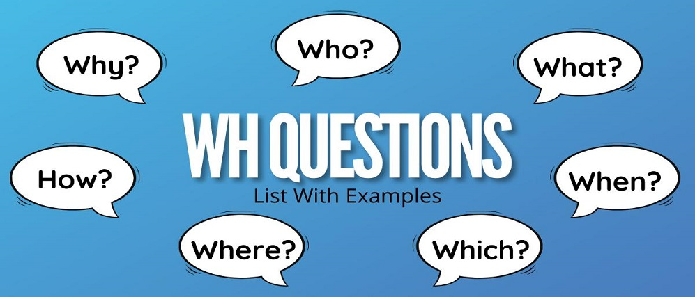
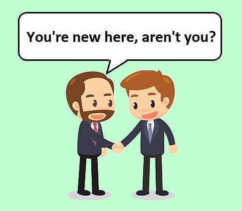
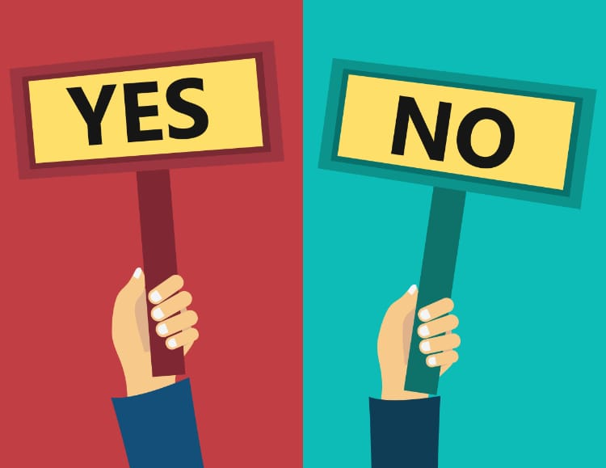
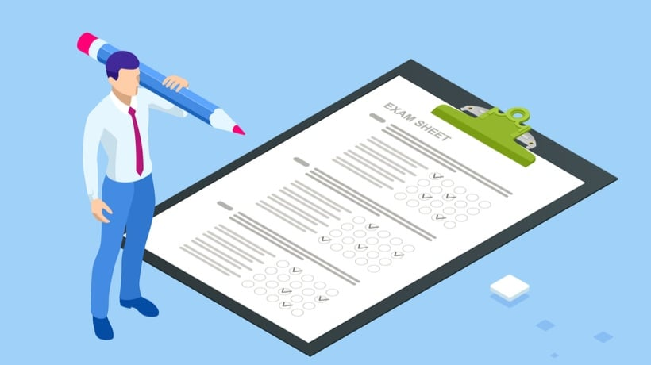
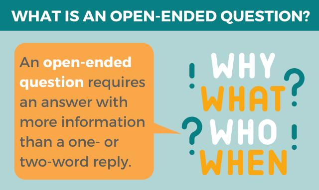
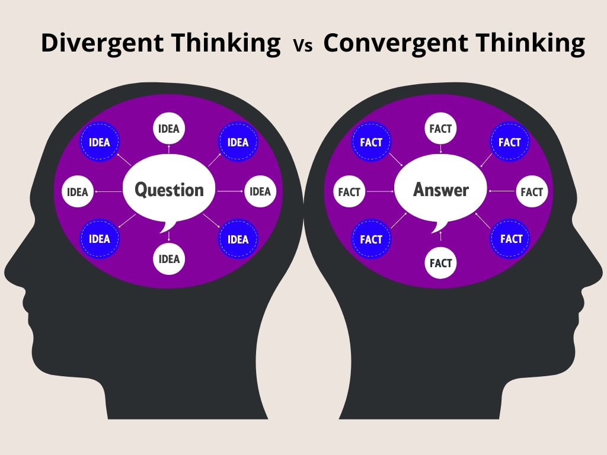

1. Wh Questions
A special question, as you can guess, uses a certain word at the beginning of the sentence to ask a specific question. The questions words who, what, where, when, why, how, how many, etc., are used to begin the question:
Example: When did you come? I came yesterday.
Example: Who is your teacher? Mr. Jack is my teacher.

2. Disjunctive or Tag Questions
This type of question is also made up of two parts, where the first part is a positive statement, and the second part is negative, or vice-versa.
The first part of the sentence defines the expected answer. If the statement is positive, a positive answer is expected; if the statement is negative, a negative answer is expected.
Example: She sent him an invitation, didn’t she? – Yes, she did.
Example: You aren’t getting married, are you? – No, I am not.

3. Yes/No Questions
Common questions that can be answered with a simple “yes” or “no” are logically called yes/no questions. As a rule, this kind of question relates to the whole sentence, and not to a separate element of it.
The answer can be a brief “yes” or “no.” Or, a longer answer can be given: “Yes, I do.” “No, I don’t like this country.” The response to a question depends on the verb used.
Example: Do you like this country? - Yes I do.
Example: Can I call my sister? - No you can´t.

4. Choice Questions
Choice questions are questions that offer a choice of several options as an answer (you might recognize them from your exams as multiple-choice questions). They are made up of two parts, which are connected by the conjunction or.
Choice questions can be either general, open-ended questions or more specific ones. If the question does not center on the subject of the sentence, a complete answer is needed.
Example: Does she like ice cream or sweets? – She likes ice cream.
Example: Where would you go, to the cinema or the theatre? – I would go to the cinema.

5. Open questions
Open questions are the opposite of closed questions in that they facilitate lengthier, more thoughtful answers and discussions among groups. These questions don’t invite “yes” or “no” responses and instead encourage the listener to respond with detail.
Example: What is the best way to learn about cooking? - There different ways to do it but one of my favorites is by watching videos on Youtube.
Example: Why did you leave the meeting early? - I was running out of time. Besides I got an appoitment to attent.

6. Divergent questions
Divergent questions have no right or wrong answers but rather encourage open discussion. While they are similar to open questions, divergent questions differ in that they invite the listener to share an opinion, especially one that relates to future possibilities.
Example: Why don't managers encourage employees to use their vacation days since it's proven to benefit the company? - That is a brilliant idea, I´ll tell them about it.
Example: How might you improve ouronline meeting? It would be great if we do it from home.
